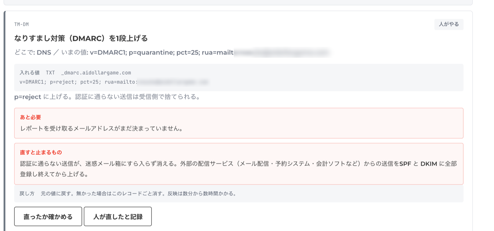

ホワイトハックは、社内にセキュリティ担当がいない会社に代わって、サイト・メール・VPN機器の脆弱性診断とペネトレーションテストを行い、見つけた穴を当社が直すサービスです。報告書を渡して終わりにはしません。専任者を1人雇うより安く、申し込んだ日から始まります。

whitehack.jp にドメインを入れると、公開されている記録だけを読んで、なりすましメールの対策（SPF・DKIM・DMARC）、証明書の設定、ドメインの登録の期限、外から見えている管理画面などを確かめます。証明書の透明性ログ（CT）、公開DNS、ドメインの登録情報（WHOIS）の3つです。この段階では、貴社のサーバーに一度も接続しません。
ペネトレーションテストに進むのは、ドメインの所有確認と書面の承諾が揃ってからです。許可のない検査は不正アクセス禁止法に当たるため、この手順を飛ばせない作りにしてあります。
whitehack.jp で調べる →右の画面は流れを示す見本です。ドメイン名と所見は架空で、実在の組織とは関係ありません。
当社のドメイン（aidollargame.com）で実行したものです。
稼働証明書は、その月に行った診断と修正の記録を当社がまとめて発行する書面です（スタンダードのプラン）。技術的な詳細は書かず、対策と予算を決める方が5分で読み終えられる形にしています。
10月に報じられた漏えいは、自社ではなく委託先が破られたものでした。承諾をいただければ、レンタルサーバーなどの委託先も診断の対象に入れます。
一方で、社員のパソコン1台ずつの管理、24時間の監視、事故が起きたときの駆けつけは、ホワイトハックには含みません。できることとできないことを、契約の前に書面でお伝えします。
料金はすべて税別です。セキュリティの専任者を1人雇うと年609.8万円（厚生労働省 job tag。採用の費用と社会保険料は別）。ライトは年36万円、スタンダードは年180万円です。
公開されている記録だけを読む無料の外部チェックです。貴社のサーバーには接続しません。結果を見たうえで、どこまで任せるかを無料でご相談いただけます。
無料でドメインを調べる 無料で相談する